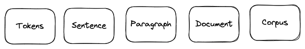

컴퓨터의 언어표현#
컴퓨터는 0,1밖에 모른다. 하지만 빨랐죠 만큼 빠르다. 즉 계산능력은 엄청나다. 이러한 컴퓨터에게 언어라는 것을 이해하게 만들 수 있을까? 이해는 하지 못하더라도 이해하는 것 처럼 보이게 만들 수 있을까?
요즘 핫한 ChatGPT는 그런 것 처럼 보이기 시작했다. 그렇다면 컴퓨터는 언어를 어떻게 이해하는 (것처럼 보이는) 것일까? 그것에 대한 시작으로 컴퓨터에 언어를 어떻게 변환해서 넣는지부터 알아야할 것이다. Token에서부터 시작해보자. Token은 언어 단위를 말한다.
1. what is Token#
언어라는 것이 참으로 어려운 것이 결국 언어란 생각, 의미를 전달하는 매체이다. 그렇다면 의미라는 것을 파악하기 위한 가장 작은 단위는 무엇일까? 동시에 컴퓨터에 input으로 넣어주어야한다. 그것을 규정한 것이 token이다. 그전에 앞서 언어학과에서 엄청 많이 듣는 corpus라는 것에 대해서 알아야 할 것이다.

Corpus는 a collection of text documents 로 정의된다. 예를 들어 news들로 구성된 dataset은 코퍼스라고 할 수 있고, tweet들로 구성된 twitter dataset도 하나의 코퍼스라고 말할 수 있다. 이러한 하나의 코퍼스는 여러 documents로 이루어지고, document는 paragraph(구, 절)로 이루어지고, paragraph는 sentence(문장)으로 이루어지고, 하나의 문장은 token(토큰)으로 이루어진다.
그러면 뭐를 token이라고 부르는가? token은 word, phrase, engram이 될 수 있다. 문장을 해체할 때 어떤 단위로 쪼갤지에 대해서 고민하고, 이 문장 해체 단위를 토큰이라고 말할 수 있다.
token이 n_gram(engram)일 경우#
engram은 group of n words togather로 정의되는 단어 뭉치다. 말 그대로 n개의 단어 뭉치를 하나의 토큰으로 보는 것이다.
예를 들어
I love my phone
이 문장을 볼 때 uni-gram(n=1)로 보면 I, love, my, phone 의 형태로 token이 4개다. Di-gram(n=2)로 보면, I love, love my, my phone으로 3개의 토큰으로 분간된다.
gram |
content |
token count |
|---|---|---|
n=1(uni-gram) |
I,love,my,phone |
4 |
n=2(Di-gram) |
I love, love my, my phone |
3 |
tokenization vs vectorization vs embedding#
a process of splitting a text object into smaller units which are also called tokens.
token에 대해서 알았으니 문장과 구를 우리가 정의한 토큰(words, numbers, engrams or symbols)으로 만드는 것이 tokenization일 것이다. 하지만 tokenization만 한다고 해서 바로 컴퓨터에 때려 넣을 수 있는 것이 아니다. 수치화시켜서 넣어줘야하고 torch를 사용할 경우에는 tensor화 까지 시켜줘야한다. 이렇게 텍스트의 수치화를 vectorization이라고 한다. 전통적인 NLP 파이프라인에서는 토큰화 이후에 벡터화 과정이 일반적으로 이루어졌다. 그런데 뒤에서 설명하겠지만 one-hot encoding, TF-IDF, Count Vectorizer는 단어의 출현횟수에 가중치를 더하고 어쩌고 저쩌고 하지만 결론적으로는 단어 간의 순서나 문맥을 고려하지 못한다는 언어적 분석에 있어서 치명적인 한계를 가지고 있었다. 그래서 나온 것이 embedding이다.
embedding은 token을 저차원의 밀집 벡터로 표현하는 과정이다. 이를 vectorization의 방법 중 하나라고 볼 수 있지만 단순 벡터화라고 볼 수 없는 이유는 token의 의미를 문맥적으로 포착하기 떄문이다. 그 중 현재를 씹어먹고 있는 것이 transformer의 attention기반의 모델들이고, 이는 다양한 embedding으로 token의 특성을 살려서 결론적으로 문맥을 잘 이해하기 때문이다. BERT를 설명하면서 뒤에 embedding 종류에 대해서 더 설명할 것이다.
Tokenization |
Vectorization |
Embedding |
|
|---|---|---|---|
목적 |
텍스트 쪼개기 |
토큰\(\to\)숫자 |
토큰\(\to\)고차원벡터공간 |
설명 |
주어진 텍스트를 단어, 부분 단어, 또는 문자로 나눔 |
텍스트 데이터를 모델이 처리할 수 있는 숫자 형태로 바꾸기 위해 사용. 가장 간단한 방법은 각 토큰에 고유한 인덱스를 부여하기. TF-IDF와 같은 기법들은 각 토큰의 중요도에 따라 가중치를 부여하여 벡터화 |
임베딩은 각 토큰을 고정된 크기의 벡터로 변환. 이 벡터는 해당 토큰의 의미, 문법적 특성, 문맥 관계 등 다양한 정보를 포함. |
output |
텍스트의 시퀀스 또는 리스트 |
숫자의 시퀀스 또는 행렬 |
각 토큰을 대표하는 고차원의 벡터 |
example |
word tokening, subword tokening, 문자 tokenizing |
one-hot encoding, TF-IDF, count Vectorizer |
Word2Vec, GloVe, FastText, BERT |
요약 |
텍스트를 처리가능한 단위로 나누기 |
토큰을 숫자로 |
토큰을 의미를 포함한 저차원 벡터(dense vector)로 |
1-1. word tokenization#
토큰을 단어로 하는 경우, 단어 토큰화라고 한다. 그렇다면 단어(word)라는 것에 대한 정의가 먼저 필요할 것이다. 단어는 단어 단위 외에도 단어구, 의미를 갖는 문자열로 간주되기도 하기 때문에 참으로 정의가 애매하다.
언어학에서 단어는 여러 관점에서 정의될 수 있다. 우선 형태론적 관점에서 단어란 ‘최소 자립 단위’를 말한다. 이는 단어 내의 형태소(Morpheme : 의미 혹은 문법적 기능의 최소 단위)들로 쪼개질 수 있으며 이렇게 단어를 쪼개는 자연어 처리를 형태소 분석이라고 부른다.
구문론적인 관점에서 단어란 문법적인 역할을 하는 최소단위를 말한다. 품사를 말한다. 의미론적 관점에서 단어(Semantic Word)는 의미를 가지는 최소단위로 간주된다. 형태소와 비슷한 것으로 보이지만 unhappiness를 예시로 보면 다르다. unhappiness는 의미론적으로 불행이라는 의미의 하나의 단어이지만(쪼개면 의미가 깨지니깐), 형태론적으로 보면 un-happy-ness라는 세 개의 구별된 형태소로 이루어져있고, 동시에 happy라는 단어(이면서 형태소)를 가지고 있는 단어라고 볼 수 있다(양자역학인가… ~이면서 ~이다).
White-space tokenization#
가장 많이 쓰이는 tokenization 방식이 white-space tokenization방식이다. 그냥 단순하게 띄어쓰기를 기반으로 token을 분간하는 것이다. 영어에서는 의미가 있을 수 있으지 몰라도 한국어에서는 띄어쓰기 만으로는 단어 토큰을 구분하기 어렵다.
Regular expression tokenization#
정규표현 토큰화. splitting pattern을 정규식으로 분간할 수 있다. 정규 표현식은 문자열의 패턴을 정의하고 일치하는 부분을 찾는데 사용된다.
S = 'Football, Cricket; Golf Tennis'
re.split('r[;,\s]', S)
Tokens = "Football","Cricket","Golf","Tennis"
re.split(‘r[;,\s]’, S)
; , \s(공백) 문자열 중에 해당 3개와 같은 것으로 분할해라.
토큰화 고려사항#
구두점이나 특수 문자를 단순 제외 NO
날짜 사이의 /, 구두점 in Ph.D, 소수점
줄임말과 단어 내에 띄어쓰기가 있는 경우
rock ‘n’ roll은 하나의 단어이지만 중간에 띄어쓰기가 존재함. 띄어쓰기가 있어도 하나의 token으로 보아야함.
(’) apostrophe
아래의 표준 토큰화(Penn Treebank Tokenization)에서의 규칙을 살펴보자.
import nltk
from nltk.tokenize import TreebankWordTokenizer
# nltk.download('treebank') # 처음 사용시에는 다운 받아야함
tokenizer = TreebankWordTokenizer()
text = "Starting a home-based restaurant may be an ideal. it doesn't have a food chain or restaurant of their own."
print('트리뱅크 워드토크나이저 :',tokenizer.tokenize(text))
트리뱅크 워드토크나이저 : ['Starting', 'a', 'home-based', 'restaurant', 'may', 'be', 'an', 'ideal.', 'it', 'does', "n't", 'have', 'a', 'food', 'chain', 'or', 'restaurant', 'of', 'their', 'own', '.']
하이픈으로 구성된 단어 ‘home-based’같은 단어는 잘 붙어서 단어취급해 주는 것을 볼 수 있다. 또한 아포스트로피로 접어가 함께 붙어준 단어는 분리해주는 것도 ‘does - n’t’를 통해서 볼 수 있다. 마지막으로 구두점도 하나의 단어 취급하는 것을 볼 수 있다.
한국어에서 토큰화의 어려움#
교착어의 특성
조사(preposition)라는 것이 존재. 띄어쓰기 없이 바로 뒤에 붙음. 띄어쓰기 단위로는 처리가 불가.따라서 형태소 단위로 단어를 구분해주어야함.
띄어쓰기가 잘 안 지켜진다.
띄어쓰기를 안해도 의미적으로 이해는 간다.
1933년에 띄어쓰기가 보편화 되었으니 100년도 안되었다.
‘모아쓰기’라는 한국어적인 특징이 존재한다.
corpus 에서 전반적으로 영어에 비해 띄어쓰기가 잘 안지켜졌을 확률이 높다.
한국어는 어순이 중요치 않다.
이건 토큰화보다는 모델링에서의 문제인데, 이전 단어가 주어질때 다음 단어가 나타날 확률을 구할때 어순이 중요치 않다는 것은 어떤 단어는 출현이 가능하다는 뜻이 된다.
확률에 기반한 언어 모델이 성능이 제대로 안나올 가능성 크다.
1-2. Sentence tokenization#
토큰의 문장(sentence)일 수도 있다. 사실 많이 쓰이는 방식은 sentence segmentation 문장 분류 작업에 사용된다. corpus가 주어질 때 문장 단위로 주어지는 것이 아니라 document 단위로 주어지는 경우가 많기 때문에, 문장을 구분해내서 저장하기 위해서 사용되는 경우가 많다.
이럴 경우에 마침표가 대부분은 문장의 구분자로 사용될 수 있지만, 문제는 가끔 안그럴 경우가 있다는 것이다. ? 혹은 ! 같은 특수 문자들이 문장 split의 기준점이 되기도 하고, 마침표가 명확한 구분자 역할을 하지 못하는 경우도 많기 때문이다. 예를 들면 … 과 같은 경우도 있다. 모든 경우의 수에 대해서 규칙을 설정한다는 것은 쉬운 일이 아니다. 그렇기에 적절하게 해당 언어에 적합한 tokenizer library를 사용해야한다. 한국어일 경우에는 문장 구분으로 kss(korean sentence splitter)를 사용한다.
1-3. morpheme tokenization 형태소 토큰화#
: Part-of-speech tagging 품사태깅
형태소 분석기랑 품사 분석기는 종종 혼용되어 사용되는 용어이다. python library들에서 대부분의 형태소 분석이 품사를 함께 분석해서 output을 주기 때문에 그럴 것 이다. 하지만 품사와 형태소는 언어학적으로 분명한 차이가 있는 용어이다. 형태소는 텍스트를 구성하는 최소 의미 단위를 말하는 것이고, 품사라는 것은 단어나 형태소가 문장 내에서 어떤 역할을 하는지, 어떤 문법적 기능이나 의미적 특성을 가지는지를 기준으로 분류한 범주이다. 이 정의만 보아도 품사를 확인하기 위해서는 형태소 분석이 선행되어야 한다.
단어의 표기는 같지만 품사에 따라 단어의 의미가 달라지는 것은 만국의 언어에서 공통되는 점이다. ‘못’은 nail이기도 하고 not이기도 하다. 단어가 해당 문장에서 어떤 품사로 사용되었는지를 아는 것은 의미를 파악하는데 중요한 정보가 된다.
주요 품사들을 표로 나타내고 nltk에서 사용하는 품사 태그를 추가한 것이다. nltk 태그는 Penn Treebank 품사 태그 세트를 기반으로 한다.
품사 |
영어명 |
설명 |
예시 |
NLTK (Penn Treebank) 태그 |
|---|---|---|---|---|
명사 |
Noun |
사람, 장소, 사물, 개념 등을 나타내는 단어. |
학교, 사과, 사랑 |
NN (singular), NNS (plural) |
동사 |
Verb |
행동이나 상태를 나타내는 단어. |
먹다, 자다, 생각하다 |
VB (base form), VBD (past tense), VBG (gerund), VBN (past participle), VBP (singular present), VBZ (3rd person singular present) |
형용사 |
Adjective |
명사나 대명사의 성질, 상태, 특성을 나타내는 단어. |
예쁘다, 빠르다 |
JJ |
부사 |
Adverb |
동사, 형용사, 다른 부사 또는 전체 문장을 수식하며, 방법, 장소, 시간, 빈도, 정도 등을 나타내는 단어. |
빨리, 아주, 여기서 |
RB |
대명사 |
Pronoun |
다른 명사를 대신해서 쓰이는 단어. |
그, 나, 우리 |
PRP |
전치사/조사 |
Preposition/조사 |
명사 앞에 위치하여 그 명사와 문장 내의 다른 구성성분과의 관계를 나타내는 단어. |
“in”, “on”, “with”/“의”, “에”, “에서” |
IN |
접속사 |
Conjunction |
두 개 이상의 단어, 구, 문장을 연결하는 단어. |
그리고, 그러나, 또는 |
CC |
감탄사 |
Interjection |
감정이나 태도를 나타내는 단어. |
아!, 헉!, 와우! |
UH |
from nltk.tokenize import word_tokenize
from nltk.tag import pos_tag
import pprint
#nltk.download()
text = "I am actively looking for Ph.D. students. and you are a Ph.D. student."
tokenized_sentence = word_tokenize(text)
print('단어 토큰화 :',tokenized_sentence)
print('품사 태깅 :',pos_tag(tokenized_sentence))
단어 토큰화 : ['I', 'am', 'actively', 'looking', 'for', 'Ph.D.', 'students', '.', 'and', 'you', 'are', 'a', 'Ph.D.', 'student', '.']
품사 태깅 : [('I', 'PRP'), ('am', 'VBP'), ('actively', 'RB'), ('looking', 'VBG'), ('for', 'IN'), ('Ph.D.', 'NNP'), ('students', 'NNS'), ('.', '.'), ('and', 'CC'), ('you', 'PRP'), ('are', 'VBP'), ('a', 'DT'), ('Ph.D.', 'NNP'), ('student', 'NN'), ('.', '.')]
from konlpy.tag import Okt
from konlpy.tag import Kkma
okt = Okt()
kkma = Kkma()
print('OKT 형태소 분석 :',okt.morphs("열심히 코딩한 당신, 연휴에는 여행을 가봐요"))
print('OKT 품사 태깅 :',okt.pos("열심히 코딩한 당신, 연휴에는 여행을 가봐요"))
print('OKT 명사 추출 :',okt.nouns("열심히 코딩한 당신, 연휴에는 여행을 가봐요"))
OKT 형태소 분석 : ['열심히', '코딩', '한', '당신', ',', '연휴', '에는', '여행', '을', '가봐요']
OKT 품사 태깅 : [('열심히', 'Adverb'), ('코딩', 'Noun'), ('한', 'Josa'), ('당신', 'Noun'), (',', 'Punctuation'), ('연휴', 'Noun'), ('에는', 'Josa'), ('여행', 'Noun'), ('을', 'Josa'), ('가봐요', 'Verb')]
OKT 명사 추출 : ['코딩', '당신', '연휴', '여행']
품사를 뽑을라고 했는데 형태소도 나오는 아주 좋은 라이브러리들이다. 형태소 라이브러리들에 대해서 정리를 해보면 아래와 같다.
언어 |
분석기 이름 |
기능 |
주요 사용 라이브러리/플랫폼 |
장점 |
단점 |
|---|---|---|---|---|---|
한국어 |
KoNLPy |
형태소 및 품사 분석 |
Python |
다양한 한국어 처리 도구 제공 |
성능이 최적화되지 않은 도구도 포함 |
Khaiii |
형태소 및 품사 분석 |
Python, C++ |
카카오에서 개발하여 높은 성능 |
설치 과정이 다소 복잡 |
|
ETRI |
형태소 및 품사 분석, 의존 구문 분석, 개체명 인식 등 |
Web API |
고품질의 분석 결과 |
유료 |
|
Mecab |
형태소 및 품사 분석 |
C++, Python, Java 등 |
빠르고 정확 |
사전 업데이트 및 추가가 필요한 경우가 있음 |
|
영어 |
NLTK |
품사 태깅 |
Python |
교육용으로 널리 사용, 다양한 기능 제공 |
상업용 애플리케이션에는 덜 적합 |
spaCy |
형태소 및 품사 분석 |
Python |
빠르고 정확, 쉬운 API 제공 |
언어 모델의 크기가 큼 |
|
StanfordNLP |
품사 태깅, 구문 분석, 개체명 인식 등 |
Java, Python |
다양한 언어 지원, 높은 정확도 |
자바 기반으로 설치 및 실행이 복잡 |
|
FastText |
임베딩 및 분류 |
Python, C++ |
사전 학습된 모델 제공, 빠른 학습 속도 |
품사 태깅 기능 없음 |
Vectorization#
토큰화-벡터화 까지만의 방법의 한계에 대해서 위에서 말했었다. token의 표현에 있어서 문맥적인 정보를 넣어주지 않았음으로 그만큼 분석에 한계가 분명하다고 볼 수 있다. 하지만 이 전에 기법들에 대해 알고 있는 것은 항상 분명하게 도움이 될 수 있다.
2-1. one-hot encoding#
sklearn에서 많이 써봤을 법한 것이다. 원-핫 인코딩이라는 것은 각 단어를 유니크한 원-핫 벡터로 변환하는 것을 말한다. 그것이 무슨 말이냐면
cat, dog, bird가 있다면 이것을 원핫 인코딩하면 이런 테이블이 나온다
cat |
dot |
bird |
|
|---|---|---|---|
- |
1 |
0 |
0 |
- |
0 |
1 |
0 |
- |
0 |
0 |
1 |
아주 단순하면서 각 단어를 고유한 벡터로 표현한다. 하지만 단어 사이의 의미적 관계나 유사성을 반영하는 표현력은 전혀 없다. 또한 one-hot encoding으로 텍스트 전부를 표현하는 것은 사실상 불가능할 정도로 sparse한 metric이 되어서 메모리 효율이 극도로 낮아진다. 차원의 저주에 걸려버리는 것이다.
from konlpy.tag import Okt
okt = Okt()
tokens = okt.morphs('고양이 개 새')
word_to_index = {word:idx for idx,word in enumerate(tokens)}
def one_hot_encoding(word,word_to_index):
one_hot_vector = [0]*(len(word_to_index))
index = word_to_index[word]
one_hot_vector[index]=1
return one_hot_vector
one_hot_encoding('고양이', word_to_index)
[1, 0, 0]
2-2. BOW(Bag of Words)#
2-3. DTM(Document-Term Matrix)#
2-4. TF-IDF#
3. Word Embedding#
word embedding이란 단어를 인공신경망으로 벡터화, 단어를 밀집 표현으로 변환
Sparse+Local VS Dense+Continuous Representation of word
아래는 단어의 표현 방법들에 대해서 정리한 것이다. 결론적으로 저차원에 많은 정보를 실수로 효율적으로 담는 embedding(dense representation)으로 발전한다.
희소표현(Sparse representation)이란 matrix의 대부분의 값이 0으로 표현되는 방법을 말한다. 원-핫 벡터는 희소 벡터(sparse vector)이다. 이러한 표현의 단점은 단어의 개수가 늘어나면 벡터의 차원이 한도 끝도 없이 커진다. 그렇게 되면 공간적 낭비, 차원의 저주에 걸린다.
국소표현(Local Discrete representation)은 해당 단어 자체만 보고 주변은 안본다. 보통 vectorization에서 사용했던 count기반의 단어표현이 많이 이러한 표현법에 해당된다. count적인 기법들은 당연하게 차원이 대폭늘어나는 희소표현이 된다.
밀집표현(Dense representation)는 희소표현의 반대다. dimension이 단어 집합의 크기로 상정하지 않는다. 사용자가 설정한 값으로 모든 단어의 벡터 표현의 차원을 맞춘다. 모델의 input 차원을 128로 했다면 128로 표현되는 것이고 이 차원 안에서 다른 단어들과의 차이를 구성한다. 한정된(dense) 차원에서 표현을 한다고 밀집표현이고 이렇게 생성한 vector를 dense vector라고 한다.
분산&이산 표현(Distributed Continuous representation)은 하나의 단어를 표현하기 위해서 주변 단어를 참고하는 것을 말한다. 강아지 주변에 귀여운, 사랑스로운 과 같은 형용사가 포진하기 마련임으로 강아지라는 단어를 표현할때는 두 형용사를 참고하고 뉘앙스, 주변의미를 챙겨가는 것이다. 이는 기본적으로 Distributed Hypothesis 분포가설이라는 가정 하에 만들어 진 것이다. ‘비슷한 문맥에서 등장하는 단어들은 비슷한 의미를 가진다’라는 가정이다. 비슷한 문맥이라는 것은 앞서 말한 주변 단어들을 말할 것이다. 이러한 의미를 더하고 차원적으로도 저차원에다 흩뿌리듯 분산하여 표현하기 때문에 분산표현이라는 단어가 기가막힌 것이다.
옆에서 보듯이 단어를 밀집벡터의 형태로 표현하는 것을 워드 임베딩이라고 한다. 한정된 차원내에서 단어를 표현하는 것이다. 그리고 워드 임베딩의 output은 embedding vector일 것이다. 간단하게 표로 차이를 표현하면
one-hot vector |
embedding vector |
|
|---|---|---|
dimension |
고차원(단어집합크기만큼) |
저차원 |
representation |
sparse vector |
dense vector |
method |
수동 |
train |
value |
1,0(Discrete, Sparse) |
float(Countinuous, Dense, Distributed) |
3-1. Word2Vec#
import gensim